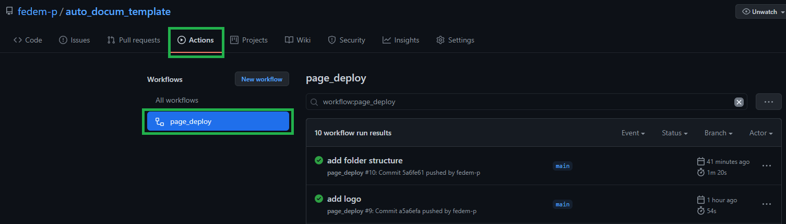
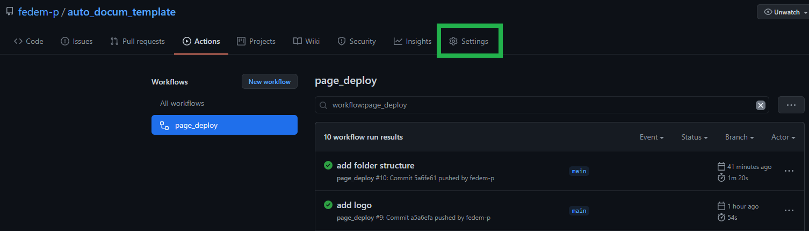
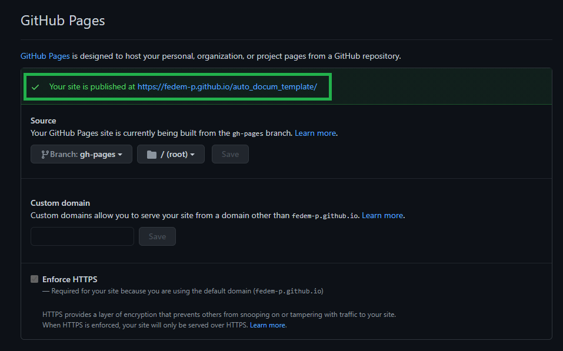

Welcome to my documentation template!¶
A template to build documentation from any python code automatically¶
The aim of this repository is to showcase a simple implementation of automatically generated documentation which uses jupyter-books (build) and github pages (deploy). -> like this one
Mind Map¶
create a repository
add documentation files in markdown in a specified folder
configure the documentation index and content
add a makefile for building the documentation
set github actions to deploy the documentation
test the documentation so far (without autogenerated reference to the code)
add python code and modules
make the code pip install-able
update makefile and api reference
Getting started¶
1 - Create a repository¶
create a repository or go to the repository you want to add documentation.
2 - Add documentation¶
Create a folder in your repository called
/docswhere you’ll host your documentation.Add in the
/docsfolder the markdown files for your documentationCreate a
_toc.ymlfile to setup your documentation table of content (see a more in depth guide here)
as an example here’s some code:- file: index numbered: true - part: Introduction chapters: - file: intro/intro1 - file: intro/intro2 - part: Core Code chapters: - file: core/main1 - file: core/main2 - part: API chapters: - file: api/index
You can skip the manual setup of the _toc.yml file by running the following code:
jupyter-book toc ./docs
and then modify the structure to your taste
add a
requirements.txtfile ( inside/docs) with the following dependencies:jupyter-book jupytext sphinx_autodoc_typehints
create a folder
/apiinside/docsand create (inside) a fileindex.rst:.. _api: API Reference ============= Information on specific functions, classes, and methods. Modules ------- For the average user's workflows. .. autosummary:: :toctree: :recursive: numpy.sum
where
numpy.sumis just to show a working implementation.
3 - Configure the documentation¶
Create a
_config.ymlfile where to setup your page configuration (see a more in depth guide here)
It’s important to insert the right extension in order to build the documentation correctly, here’s an example:sphinx: extra_extensions: - sphinx.ext.viewcode - sphinx.ext.napoleon - sphinx.ext.autodoc - sphinx_autodoc_typehints - sphinx.ext.autosummary - sphinx.ext.intersphinx config: autosummary_generate: True autosummary_imported_members: True intersphinx_mapping: python: - "https://docs.python.org/3" - null numpy: - "https://docs.scipy.org/doc/numpy/" - null
where
intersphinx_mappingallows the build to get the documentation online for the specified packages (i.e.numpy).
4 - Build the documentation¶
Write a make file to build the documentation:
.PHONY: docs docs: rm -rf docs/_build/html find docs/api ! -name 'index.rst' -type f -exec rm -f {} + pip install -qr docs/requirements.txt jb build docs
5 - Add Github action for deployment¶
At this point the structure of the folder is ready to go, we can then move on to setup an action which will build and upload the documentation automatically.
Create a
.github/workflows/folderAdd in the folder a
.ymlfile for your action:name: page_deploy on: push # Trigger the workflow on push or pull request, # but only for the main branch # push: # branches: # - main jobs: deploy-book: runs-on: ubuntu-latest steps: - uses: actions/checkout@v2 # Install dependencies - name: Set up Python uses: actions/setup-python@v1 with: python-version: "3.8" - name: Install dependencies run: | python -m pip install --upgrade pip pip install -r requirements.txt # Build the book - name: Build the book run: | make docs # Push the book's HTML to github-pages - name: GitHub Pages action uses: peaceiris/actions-gh-pages@v3.6.1 with: github_token: ${{ secrets.ACCESS_TOKEN }} publish_dir: ./docs/_build/html
To reuse this code you may need to change a couple of lines:
if your docs files are in the source folder as suggested in this guide you don’t have to change the path for the build and publish. If this is not the case you need to change the folling lines:
#change with the path to your files run: | jupyter-book build ./docs
#change with the path to your files publish_dir: ./docs/_build/html
you also need to change the
ACCESS_TOKENwith the one specific to your repo (see more about github secrets here)
If you decide to reuse this code, remember also to add a
requirements.txtin the main repository for the dependencies of your code.
6 - Test the progress so far¶
Note: you don’t need to initiate gh-pages branch or abilitate your repo.
Commit and push the changes, check in the settings of your github repository if the link to your documentation has been activated correcly
check the github actions section of your repository and check whether there’s any fail 
If everything went smoothly, then go to the settings and scroll down to github pages -> click on the link and see if your documentation is up  
7 - Add python code and modules¶
create another folder to hold the code of your package and make sure you insert an
__init__.pyfile for each module.to get better autogenerated descriptions of your code add docstrings for each function and suggest the appropriate type for the inpute variables in this way:
def difference(a: int, b: int): """ Subtracts two integers """ return a-b
8 - Install the code¶
to make the code intall-able we need to create a
setup.pyfile in the main repository:setup( name='myproject', description='a template for making documentation', long_description=long_description, long_description_content_type='text/markdown', version='0.2', author='your name', author_email='youremail', url='https://github.com/fedem-p/my_documentation_template', packages=find_packages(), include_package_data=True, python_requires=">=3.7", license='MIT', zip_safe=False, entry_points={ 'console_scripts': ['myproject=myproject.entry_points:main'], }, classifiers=[ 'Intended Audience :: Developers', 'Programming Language :: Python :: 3.7', 'Natural Language :: English', ], keywords='auto documentation' )
for a more in-depth guide check this documentation
Now test your code by running
pip install -e .
from within the repository.
if it install everything without errors you can further test that everything worked properly in this way:\
run python, import sys and run sys.path -> your repository should be in the list
run python, import your package and some modules -> if you get any errors you may need to check if the code runs properly
9 - Update building script¶
The last step is to update a couple of files:
Change the make file in this way:
.PHONY: docs docs: rm -rf docs/_build/html find docs/api ! -name 'index.rst' -type f -exec rm -f {} + pip install -qr docs/requirements.txt pip install -r requirements.txt ## new line pip install -e . ## new line jb build docs
add to the
index.rstfile the modules that you want to reference:For the average user's workflows. .. autosummary:: :toctree: :recursive: numpy.sum myproject myproject.module
for a great example of this you can check the napari repository
10 - Test your page¶
Finally you can commit your changes and see if your documentation gets build properly. Repeat the same steps as in section number 6 and navigate to the api page. Check if there are the links to your modules and functions.